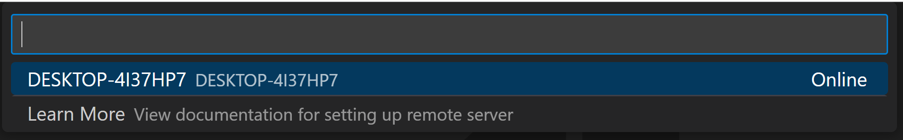

Remote Development Even Better
December 07, 2022 by Brigit Murtaugh, @BrigitMurtaugh
At its core, Visual Studio Code is a code editor, and it integrates with other environments through our remote development experiences to become even more powerful and flexible:
You may not think about it, but VS Code has a built-in command-line interface (CLI) that lets you control how you launch and manage the editor - you can open files, install extensions, and output diagnostics through command-line options:
The CLI is incredibly useful in workflows using VS Code Desktop, but there was a gap: you couldn't start a remote instance with it. So, we wanted to fix that gap by bringing local and remote closer together to make the CLI even more powerful.
Today, we're thrilled to share our enhanced code CLI that lets you both launch VS Code and connect to a machine remotely from VS Code Desktop or vscode.dev. The updated CLI is built into the latest VS Code release and is also available for standalone install, so you can create a secure connection to any computer and connect to it remotely, even if you can't install VS Code Desktop on it.
In addition to the new CLI, we've made the following updates to improve remote development:
- You can enable tunneling directly from the VS Code UI.
- Tunneling is no longer in private preview – anyone can create and use tunnels, no sign up required.
- We renamed two remote extensions to be clearer about how they work and where they can help development:
- The "Remote - WSL" extension is now simply WSL.
- The "Remote - Containers" extension is renamed Dev Containers to reflect its use for creating development environments.
Tunnel to anywhere, from one tool
Tunneling securely transmits data from one network to another. You can use secure tunnels to develop against any machine of your choosing from a VS Code desktop or web client, without the hassle of setting up SSH or HTTPS (although you can do that if you want as well 😊).
You have two great options for tunneling to remote machines from VS Code:
- Use the new, enhanced
codeCLI. - Enable tunneling from the VS Code UI directly.
We'll explore both options in the following sections.
Enhanced code CLI
When we released the VS Code Server, we mentioned our long-term vision to integrate it into the code CLI. We've now achieved this, and we've also made it available for standalone install, in case you're working on a VM or locked down machine where you can't install VS Code Desktop.
Below are the steps to install the code CLI and create a secure tunnel with it. If you tried the private preview of the VS Code Server, the steps will be very similar.
Note: If you were using the standalone
code-serverCLI during the private preview of the VS Code Server, you should now use the latestcodeCLI (via the latest VS Code Desktop or standalone download) instead.
-
Install the
codeCLI on a remote machine you'd like to develop against in a local VS Code client. This could be a remote desktop, VM, or even a Windows Subsystem for Linux (WSL) distro.The CLI is automatically included in your existing VS Code installation – no additional setup required. If you don't have VS Code installed or can't install it on your remote machine, you can grab the CLI through a standalone install on our download page:
Note: If you're using the standalone install, the commands in the following section will start with
./coderather thancode. -
Double-check the CLI installed successfully by using the help command:
code -hYou may explore tunneling-specific commands with:
code tunnel -hNow that you've installed the CLI, let's set up this machine for tunneling so that you can connect to it from any VS Code client.
-
Create a secure tunnel with the
tunnelcommand:code tunnelThis command downloads and starts the VS Code Server on this machine and then creates a tunnel to it.
Note: You will be prompted to accept the server license terms when you first start a tunnel on a machine. You can also pass
--accept-server-license-termson the command line to avoid the prompt. -
This CLI will output a vscode.dev URL tied to this remote machine, such as
https://vscode.dev/tunnel/<machine_name>/<folder_name>. You can open this URL from any machine you want. -
When opening the vscode.dev URL for the first time on a client, you'll be prompted to log into your GitHub account at a
https://github.com/login/oauth/authorize...URL. This authenticates you to the tunneling service to ensure you have access to the right set of remote machines.
Congratulations, you've successfully installed and used the latest tunneling features of the code CLI!
Enable Tunneling from VS Code UI
You may also choose to create tunnels directly from the VS Code UI if you have VS Code installed on your remote machine. This is a quick, convenient way to enable remote access to your machine if you're already working in VS Code.
Open VS Code on your remote machine. In the VS Code Account menu, select the option to Turn on Remote Tunnel Access…, as demonstrated in the image below. You may also open the Command Palette (F1) and run the command Remote Tunnels: Turn on Remote Tunnel Access....

You'll be prompted to log into GitHub. Once you've logged in, a tunnel will start up on this remote machine, and you'll be able to connect to it:

In a client of your choice, you can open the vscode.dev link from the notification above and start coding!
Connect via Remote Tunnels
The Remote - Tunnels extension manages these secure tunnels between your local and remote machines. The vscode.dev instances you open through the code CLI or VS Code UI come with the Remote Tunnels extension preinstalled.
If you're already working in a VS Code client (desktop or web) and would like to connect to a remote tunnel, you can install and use the Remote - Tunnels extension directly. Once you install the extension, open the Command Palette (F1) and run the command Remote Tunnels: Connect to Tunnel. You'll be able to connect to any remote machines with an active tunnel:

You can also view your remote machines in the Remote Explorer, which you can open through the command Remote Explorer: Focus on Remote View:

Removing a tunnel or machine
If you'd like to stop a tunnel you're running via the CLI, use Ctrl + C to end the active connection. If you've enabled tunneling through the VS Code UI, run the command Remote Tunnels: Turn off Remote Tunnel Access....
You can remove a machine's association with tunneling by running code tunnel unregister on that machine. In VS Code, select the Remote Explorer view, right-click on the machine you'd like to remove, and select unregister.
Remote Development extensions
Along with the updates to tunneling and the code CLI, we've made some updates to our Remote Development extensions, which allow you to use a development container, remote machine, or WSL as a full-featured development environment.
WSL and Dev Containers
We heard your feedback about the names of the Remote - WSL and Remote - Containers extensions. We intended for Remote to indicate that you are developing in a "remote" or "separate" WSL distro or development container, rather than traditional local development. However, this is a different use of "remote" than many people use, and it can cause confusion (for example, is the Dev Container on my local machine?).
We updated naming and in-product commands in these extensions to be clearer, renaming them to WSL and Dev Containers. Links such as the extension identifier in the Marketplace and documentation remain the same, so you shouldn't see breakage in your current use of these two extensions.
Remote Tunnels
As described above, you can use the Remote - Tunnels extension to connect to a remote machine via a secure tunnel, without the requirement of SSH. We've renamed the extension to "Remote - Tunnels" from "Remote Server" as we believe this more clearly indicates its behavior (the extension is used to develop on remote machines via secure tunnels after all!).
Closing – thank you!
We've heard your feedback over the years on our remote experiences and most recently on the VS Code Server – we can't thank you enough for sharing the thoughts that continue to shape our product experiences. We're excited to see how you use our latest remote features and for your feedback!
If you'd like a more in-depth look at the tools described in this blog, we created a topic on the Remote - Tunnels extension, along with updating the VS Code Server and code CLI documentation to reflect the latest changes.
Please feel free to file feature requests or bugs in our vscode-remote-release GitHub repository, or you can Tweet us your thoughts @code.
Happy Coding!
Brigit Murtaugh, @BrigitMurtaugh